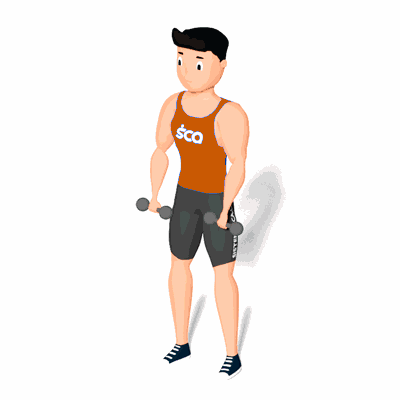

Rosca Zottman

Exercício para fortalecimento e hipertrofia da região do bíceps. Estimula também, os músculos do antebraço.
Ficha Técnica
Tipo: Musculação
Grupo Muscular: Bíceps
Aparelho: Nenhum
Músculos: Nenhum
Como realizar
- Segure um par de halteres e posicione-se em pé com o tronco firme e reto;
- Mantenha os braços estendidos com as palmas das mãos voltadas para frente;
- Sem mover a parte superior dos braços, flexione os cotovelos e aproxime os halteres de seus ombros o máximo que puder;
- As palmas das mãos devem ficar voltadas para o corpo no topo da flexão;
- No topo do movimento, gire seus pulsos de forma que as palmas da mãos fiquem votadas para fora;
- Abaixe os halteres de volta às laterais do corpo.
 RC STORE
RC STORE